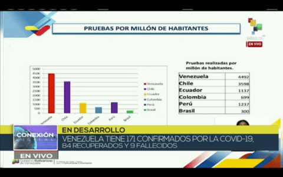

Venezuela Registra 29 Nuevos Casos de COVID-19 para Elevar la Cifra de Contagios a 285
Venezuela detectó en las últimas 24 horas un total de 29 casos positivos del nuevo coronavirus, con lo que la cifra total de contagios se ubica en 285.
Añadió que el Gobierno Nacional mantiene un estricto seguimiento a los focos de contagios en los estados Miranda y Nueva Esparta. Esta acción ha permitido detectar que de los nuevos casos positivos: cuatro de ellos están relacionados, en la entidad mirandina, a una compañía de seguridad que presta servicio a una reconocida empresa de alimentación, uno se relaciona a la fiesta de Los Roques y otro se registró en el municipio Acevedo derivado del foco de la academia de béisbol Roberto Vhalis, ya que se trata de un familiar de unos de los jóvenes que hace vida en esta escuela.
Rodríguez recordó que ante estos focos de contagios el presidente Nicolás Maduro decretó un toque de queda en el estado Nueva Esparta y el confinamiento del municipio Acevedo para elevar las labores de peine y pesquisaje masivo para lograr cortar la cadena de transmisión de este virus que azota a la humanidad.
Prueban Fármaco Capaz de Curar Síntomas de COVID-19

Según las pruebas llevadas a cabo con 125 pacientes contagiados con COVID-19, -113 en estado grave- hospitalizados en el Hospital de Chicago , la Universidad de Medicina de la entidad informó que el fármaco podría curar los síntomas a las personas infectadas.
El portal especializado Stat, reporta que desde el inicio de los ensayos clínicos, los médicos observaron una rápida disminución de la fiebre y de los síntomas respiradorios causados por el virus en la mayoría de los pacientes tratados con el fármaco. Los mismos, fueron dados de alta en un plazo no mayor a los siete días.
El mes pasado el presidente de EE.UU., Donald Trump, declaró que el antiviral remdesivir "parecía tener un muy buen resultado". Sin embargo, Mullane recomendó no sacar conclusiones hasta que finalice el estudio que está formado por unos 2 mil 400 pacientes de 152 sitios de ensayos clínicos en diferentes partes del mundo.
Hasta ahora, no han informado cuando se publicarán los resultados finales de la investigación.
El fármaco utilizado, también llamado "Gilead" fue creado originalmente contra el ébola, pero no tuvo éxito.

- 